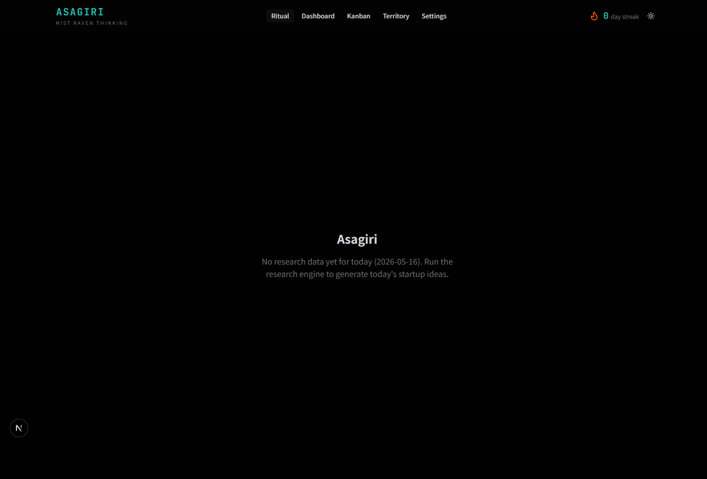
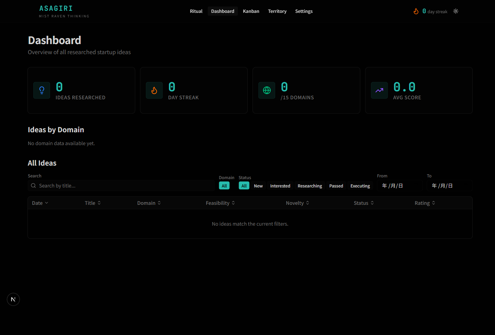
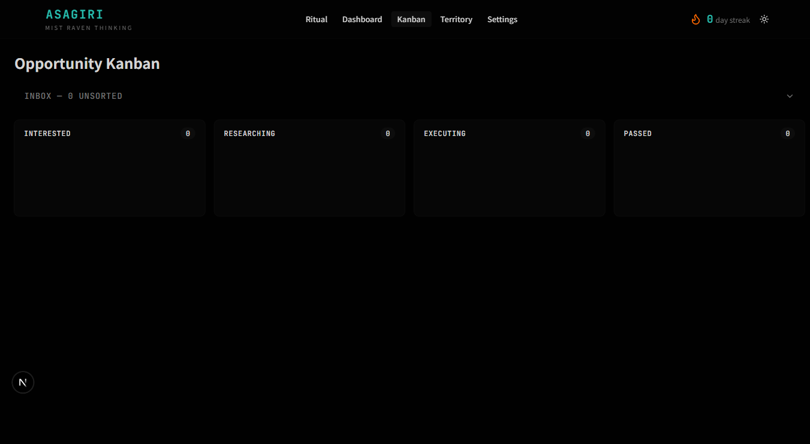
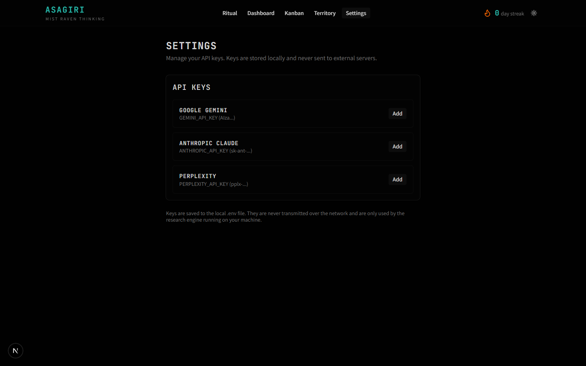

Sasagani: capture without breaking flow.
A floating fragment-input that lives in the corner of any page. Paste a URL, type a half-thought, hit "Drop it in" — the fragment lands in the Asagiri inbox thread and you go back to what you were doing. Preact, no framework dependencies, one script tag, ~7 KB on the wire.
Install
Three modes, selected by the data-api attribute:
<!-- Public demo: localStorage only, nothing leaves the browser -->
<script src="https://your-host/sasagani.js"></script>
<!-- Local webapp: hits webapp running on your machine -->
<script src="..." data-api="http://localhost:3003"></script>
<!-- Cloudflare-Access-gated tunnel: cross-device, authenticated -->
<script src="..." data-api="https://asagiri-api.brightraven.world"></script>
When data-api is missing or set to "demo", the
widget uses a localStorage backend — useful for showcases. When pointed
at a real webapp, the bundle sends credentials: 'include'
so Cloudflare Access cookies ride along. A 401/403 surfaces a dedicated
owner-only notice instead of a generic connection error.
Try it — live demo
data-api set). Drop a URL, type a
thought, watch the connections form. Fragments are kept in your
browser's localStorage only — refresh the page and they stay, clear
site data and they're gone. Nothing is sent anywhere.
The 48×48 floating button appears bottom-right. Drag it to reposition. Click to expand the panel. Try pasting an article URL, then paste another with overlapping wording — a connection line will draw between them in the mini-web visualization.
Captures from a real session
Screenshots from running sasagani against the production Asagiri webapp. The flow is the same as the demo above; the differences are persistence (real SQLite on your machine instead of localStorage) and AI-generated connection descriptions (Gemini summarises why two fragments relate, replacing the demo's naive shared-word heuristic).




Behavior
- Always docked, never blocking. The button sits in the bottom-right with a small visual footprint. It never overlays content you're reading.
- Two-state input. Click expands a small text panel. Click outside, hit Escape, or hit "Drop it in" to collapse.
- URL or text. Pasted URLs get URL-classified; free text becomes a note fragment. The widget doesn't try to be clever about classification beyond that — that's downstream's job.
-
Inbox-thread routing. Every fragment lands in a
thread named
inbox. The webapp's triage views (kanban, territory) consume from there. - Local-first. The widget only knows one host. No CDN calls, no analytics, no third-party fonts.
Backend contract
The widget calls three endpoints:
| Method | Path | Purpose |
|---|---|---|
GET |
/api/sasagani/threads |
Lookup or create the active inbox thread |
POST |
/api/sasagani/threads |
Create inbox thread if none exists |
POST |
/api/sasagani/fragments |
Submit a fragment (URL or text) |
All three are implemented in webapp/src/app/api/sasagani/*.
CORS is set there so the widget can be embedded on any origin.
Bundle
| Property | Value |
|---|---|
| Framework | Preact (no React runtime) |
| Build | Vite + terser, single-file IIFE |
| Size (raw) | ~28 KB |
| Size (gzipped) | ~7 KB |
| Dependencies | None at runtime |
| Origin / data flow | Single configured host; no telemetry |
Why Preact, not vanilla
Two reasons. First, the input UI grew non-trivially — composition states, paste handling, optimistic UI for submission — and hand-written DOM became a maintenance burden. Second, Preact's render cycle scales to future widgets (review queue, daily digest popup) without rewriting the mount logic. Bundle cost stayed under 10 KB gzipped, which is the ceiling we agreed on for "embeddable anywhere".